The AI Strategy Optimization system is a meta-level framework within backtest-kit designed to automate the creation and evaluation of trading strategies. Unlike standard execution modes, the Optimizer uses Large Language Models (LLMs) via Ollama to synthesize executable strategy code (.mjs files) based on historical data and natural language prompts. The Walker component then facilitates the multi-strategy comparison of these generated assets to identify the most robust performers.
The Optimizer functions as a code generation pipeline. It collects data from defined sources (News, Technical Indicators, etc.), formats them into LLM prompts, and processes the AI's response into a functional trading strategy.
Optimizers are registered using the addOptimizer function. This requires defining training ranges (where the LLM "learns" patterns) and testing ranges (where the generated code is validated).
source)Data sources are the bridge between raw market information and the LLM's context. Each source must implement:
getPrompt)The getPrompt function assembles the final instructions for the LLM. It typically instructs the model to produce a strategy that follows specific risk parameters or logic structures.
The system generates fully executable .mjs files. These files often utilize structured JSON output to ensure the strategy can be parsed by the backtest-kit engine.
To ensure the generated AI logic is actionable, the system enforces a JSON schema via Ollama's format parameter.
| Property | Type | Description |
|---|---|---|
position |
enum | "wait", "long", or "short" |
priceOpen |
number | Entry price (market or limit) |
priceTakeProfit |
number | Target exit price |
priceStopLoss |
number | Risk exit price |
minuteEstimatedTime |
number | Expected duration (max 360m) |
The following diagram illustrates how the Optimizer converts high-level trading concepts into internal code entities.
Diagram: Optimizer Entity Mapping

The Walker is the comparison engine. It executes multiple strategies (often those generated by the Optimizer) against the same market data to compare performance metrics like Sharpe Ratio and Win Rate.
ccxt-exchange)For the Walker to function across different symbols and intervals, it relies on the ccxt-exchange schema defined in modules/walker.module.ts. This schema provides a standardized interface for the underlying Binance exchange via the ccxt library.
Key functions in modules/walker.module.ts:
getCandles: Fetches OHLCV data and maps it to the internal backtest-kit format.getOrderBook: Retrieves bid/ask data (Note: Throws error in backtest mode to prevent look-ahead bias).formatPrice / formatQuantity: Uses market.limits and roundTicks to ensure orders meet exchange precision requirements.Generated strategies often implement a "Waterfall" analysis pattern, where the LLM is prompted to analyze 1h, 15m, 5m, and 1m candles sequentially before generating a final signal.
Diagram: Walker Execution Flow

The system requires an active Ollama instance. Recommended models include deepseek-v3.1 for its ability to handle complex trading logic and structured JSON.
Environment Configuration:
OLLAMA_HOST: Defaults to http://localhost:11434.OLLAMA_MODEL: Specifies the target model for generation.